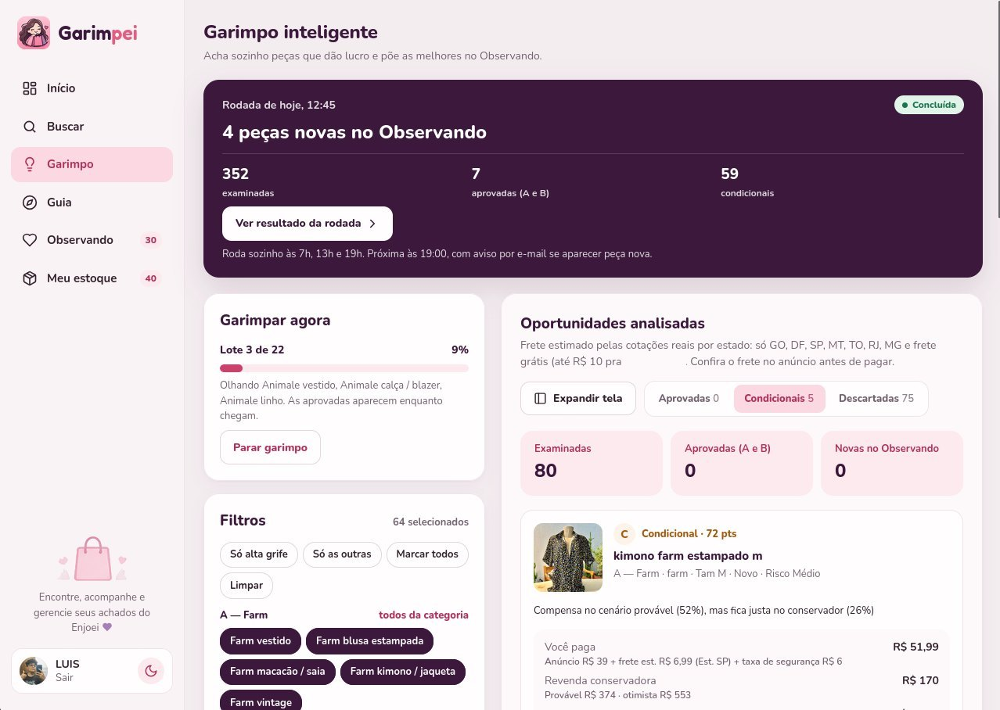
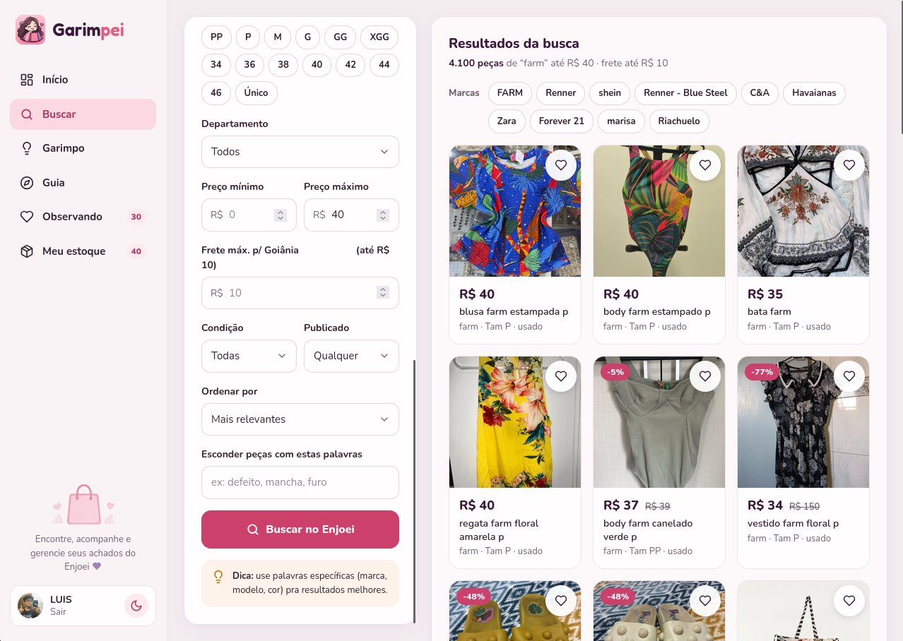
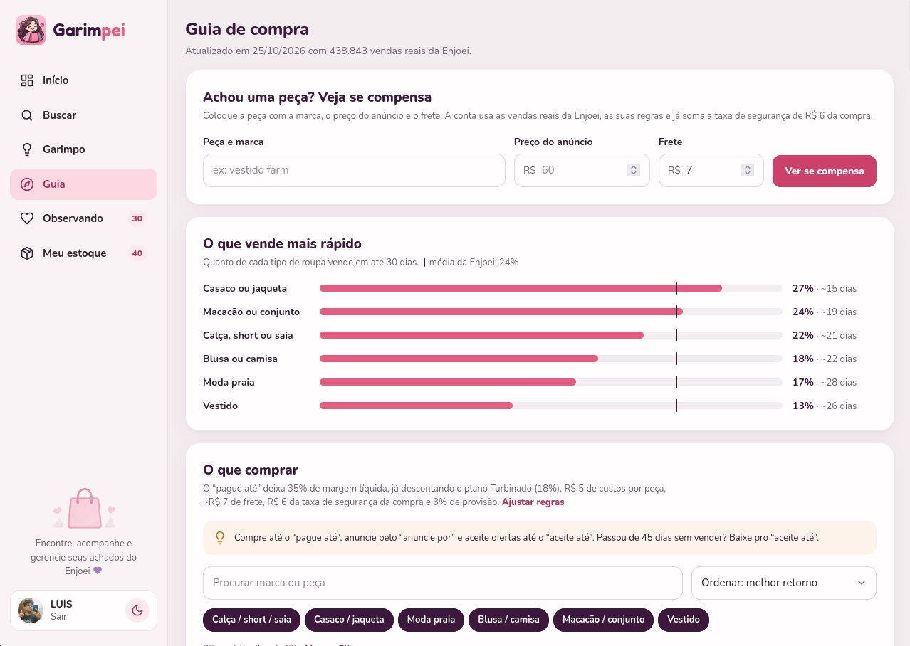
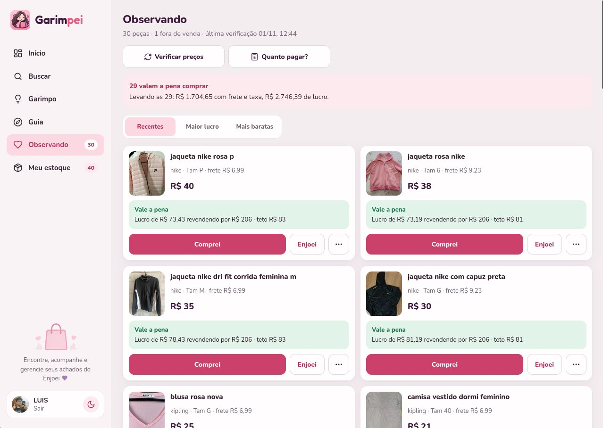
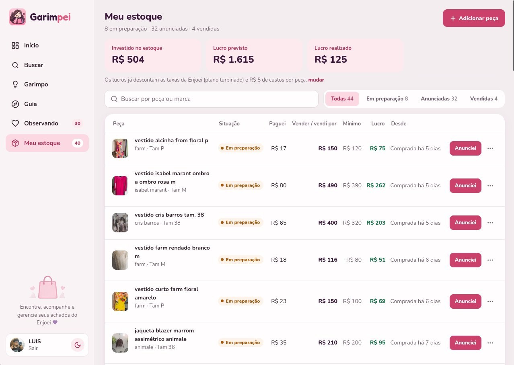
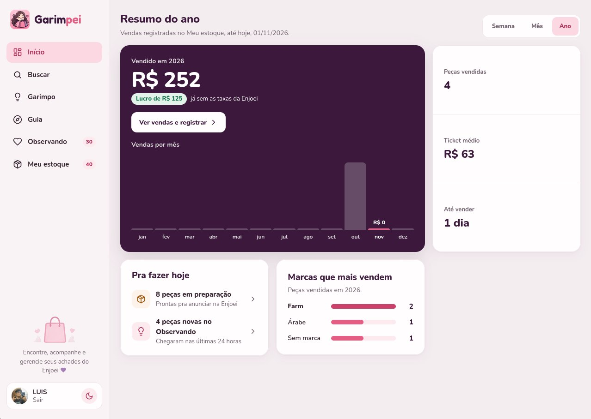

Projeto 03 / 04 · Pessoal, feito pela PJ
Garimpei
Garimpo Automático e Precificação para Revenda na Enjoei
- Tipo
- Projeto pessoal
- Vínculo
- Desenvolvido pela minha PJ, para uma cliente
- Papel
- Projeto e desenvolvimento de ponta a ponta · engenharia de dados e full-stack
- Status
- Em produção
- Acesso
- garimpei-two.vercel.app ↗Login restrito · código privado

Contexto
Achar peça que dá lucro na Enjoei é garimpo manual: o site não filtra por margem nem por frete, e a maioria dos anúncios baratos deixa de compensar depois da taxa e do envio.
Um motor que estima o preço de revenda pelo próprio mercado, calcula o teto de compra para uma margem mínima de 35%, filtra pelo frete até Goiânia e dá nota de 0 a 100 a cada peça. Roda sozinho três vezes por dia e avisa por e-mail quando aparece algo que vale a pena.
Resultado
- 79marcas na pesquisa de giro
- 794cotações reais de frete
- 3×rodadas automáticas por dia
Entregue a uma cliente, em produção na Vercel e em uso diário na operação real de revenda dela, com estoque integrado: custo, preço de venda, menor valor aceito e lucro por peça. Acesso restrito por login Google.
Ver o appTelas do sistema





Arquitetura
- Fonte API da Enjoei · filtros por categoria
- Mercado Revenda estimada pelo p25 dos usados
- Teto Taxas + margem mínima de 35%
- Frete Cotação real ou tabela por UF
- Nota 0–100 · classes A a D · Observando
- OrquestraçãoGitHub Actions · 7h, 13h e 19h · aviso por e-mail
- InfraFastAPI na Vercel (São Paulo) · Postgres no Neon · login Google com lista de acesso
Decisões de engenharia
- 01Filtros guiados por dados: pesquisa de giro de 79 marcas e uma amostra de 3.000 anúncios sorteados por ID sequencial (27% vendidos) definem o que o garimpo procura. Esportivas e grifes com pouca oferta giram mais; fast fashion, pouco.
- 02Frete calibrado e medido: sem sessão da Enjoei, uma tabela por estado feita com 794 cotações reais (percentil 75) substitui a cotação. Conferi contra o frete real: cerca de 2 em cada 3 peças aprovadas acertam, e o app deixa isso claro.
- 03Estimativa conservadora: a revenda usa o percentil 25 dos usados da mesma marca e tipo, não a média, e a busca vai das mais baratas até o teto de compra.
- 04Um motor, três interfaces: o mesmo código atende a web, uma CLI com saída JSON e uma skill de agente de IA que garimpa e já preenche o Observando.
- 05Aviso sem ruído: o e-mail só sai quando há peça nova ou queda de preço, e a tela avisa se passar 14 horas sem rodada.
Stack